RAG는 어디서 삐걱댈까요
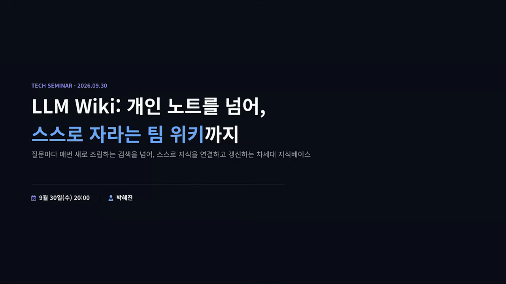
RAG는 문서 더미에서 질문과 비슷한 청크를 찾아 LLM에게 건네고, LLM이 그 자리에서 답을 만들어요. 벡터 검색이든 키워드 검색이든 grep이든 본질은 같아요. 찾고, 그 자리에서 한 번 조립하고, 끝나요.
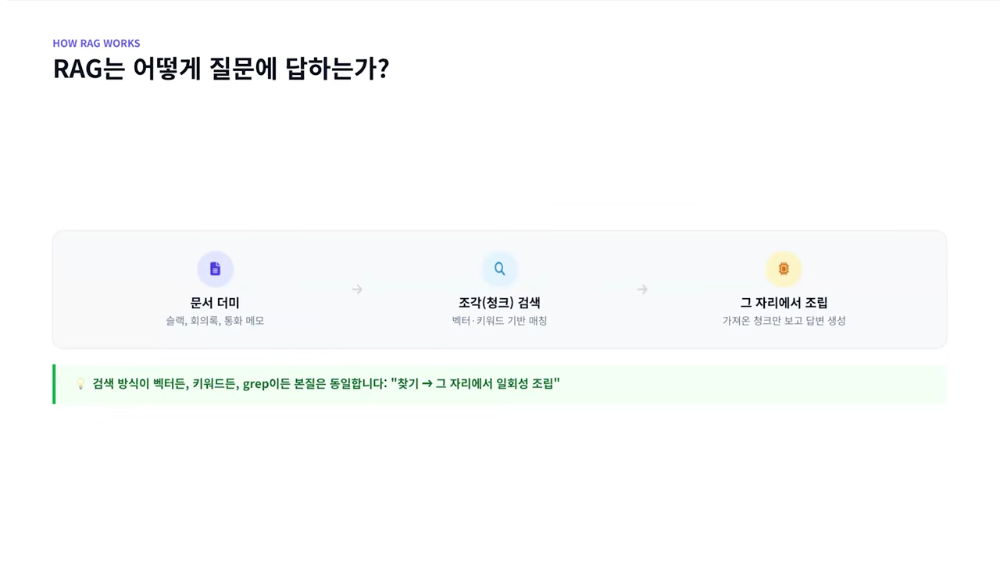
실제 업무에서는 이 구조가 세 군데에서 삐걱대요.
| 빈틈 | 무슨 일이 생기나요 | 예시 |
|---|---|---|
| 답이 여러 문서에 흩어져 있어요 | 검색은 질문과 표현이 비슷한 조각부터 가져와요. 이어 봐야 할 조각을 다 가져온다는 보장이 없어요 | '담당자가 누구야?'에 이미 퇴사한 옛 담당자 문서가 걸려요 |
| 매번 처음부터 조립해요 | 힘들게 만든 결론이 어디에도 남지 않아요. 문서가 늘수록 부담이 커져요 | 열 명이 같은 질문을 하면 같은 조립을 열 번 해요 |
| 옛 내용과 새 내용이 함께 검색돼요 | 어느 쪽이 최신인지 매번 모델이 판단해요. 두 문서가 어긋난다는 사실도 기록되지 않아요 | 결정이 바뀐 뒤에도 지난 회의록은 그대로 남아 있어요 |
강사는 RAG를 버리자는 게 아니라고 분명히 해요. 문제는 검색 다음의 조립이에요. 그걸 매번 새로 하고 매번 버린다는 점이요. 한마디로 지식이 쌓이지 않는다는 게 문제예요.
LLM Wiki의 세 층과 세 동작
그렇다면 조립한 결과를 미리 정리해 남겨 두면 어떨까요. 이게 LLM Wiki의 출발점이에요. Andrej Karpathy가 GitHub Gist와 X 글로 공개한 짧은 마크다운 문서에서 시작돼 개발자들 사이에 빠르게 퍼졌어요.
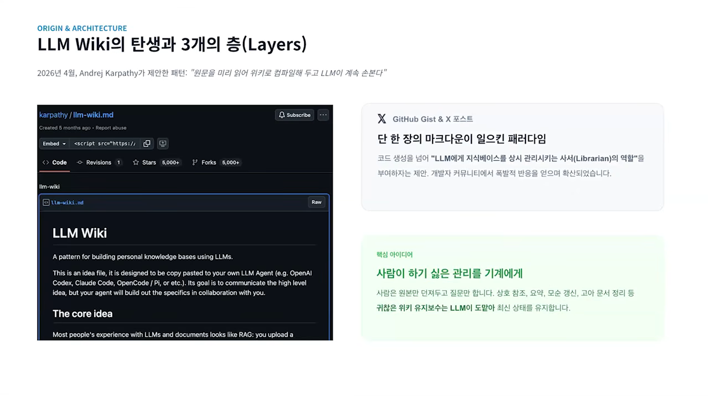
문서 관리가 어려운 건 처음 쓰는 게 아니라 그 뒤 계속 고치는 일 때문이에요. LLM Wiki는 바로 그 일을 기계에게 넘겨요. 구조는 세 층이에요.
- raw: 슬랙 대화, 회의록, 통화 메모처럼 사람이 넣는 원본이에요. LLM은 절대 고치지 않아요. 나중에 '원래 뭐라고 적혀 있었지?'를 확인하는 기준이 돼요.
- wiki: LLM이 직접 쓰는 마크다운이에요. 고객사·사람·결정·아키텍처처럼 주제별로 나누는데, 구성은 마음대로 바꿀 수 있어요.
- 스키마: Claude Code라면 보통 CLAUDE.md, Codex라면 AGENTS.md예요. 폴더 구조, 링크 거는 법, 내용이 어긋날 때 표시하는 법 같은 규칙을 적어요. 강사는 위키 품질이 대부분 이 층에서 결정된다고 봐요.
이 세 층 위에서 LLM이 하는 동작은 세 가지예요.
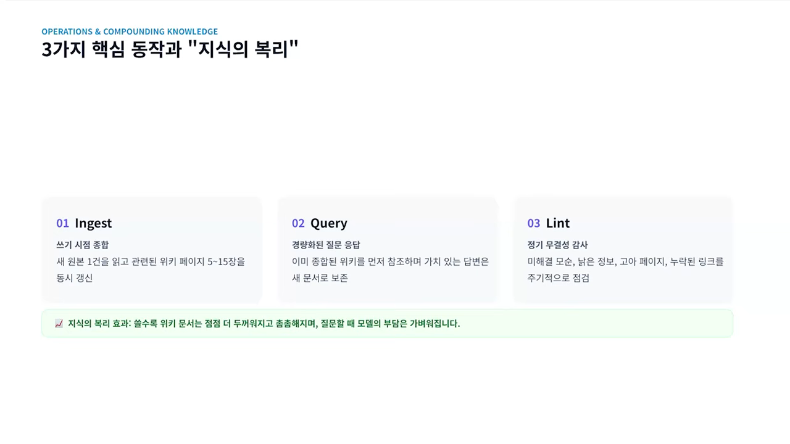
- Ingest: 새 원본을 읽고 위키 구조에 맞게 다시 가공해요. 원본 하나를 넣었다고 페이지가 하나 생기는 게 아니에요. 관련 페이지가 다섯 장이면 다섯 장이 다 바뀌어요.
- Query: 이미 정리된 위키를 보고 답해요. 좋은 답은 다시 새 위키 페이지로 저장할 수 있어요.
- Lint: 쓰다 보면 생기는 페이지 사이의 모순, 오래된 내용, 깨진 링크를 찾아 고쳐요.
좋은 답이 다음 질문의 재료가 되니, RAG에서는 버려지던 조립 결과가 위키에서는 쌓여요.
RAG와 위키, 무엇이 다를까요
강사는 두 방식을 한 표로 정리해요. 가장 큰 차이는 RAG가 지식의 '발견'이고, 위키가 지식의 '축적'이라는 점이에요.
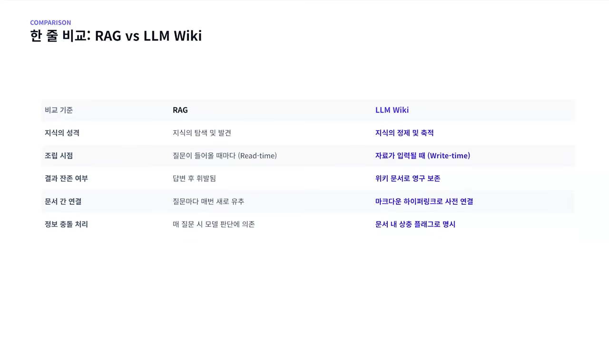
| 기준 | RAG | LLM Wiki |
|---|---|---|
| 지식의 성격 | 탐색과 발견 | 정제와 축적 |
| 조립 시점 | 질문이 들어올 때마다 | 자료가 입력될 때 |
| 결과 | 답변 후 사라져요 | 위키 문서로 남아요 |
| 문서 간 연결 | 질문마다 새로 추측해요 | 마크다운 링크로 미리 연결해요 |
| 정보 충돌 | 매번 모델 판단에 맡겨요 | 문서 안에 '상충'으로 표시해요 |
그렇다고 위키가 무조건 낫다는 건 아니에요. 둘은 경쟁이 아니라 보완 관계예요. RAG는 거대한 원문 더미에서 증거를 찾고, 위키는 찾은 증거를 조립해 쌓아 둬요. 위키 문장마다 출처 링크를 붙이면 원문이 궁금할 때 언제든 돌아갈 수 있어요.
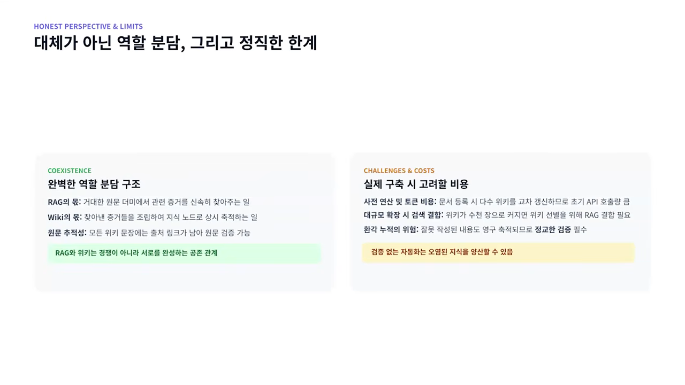
한계는 세 가지예요.
- 토큰 비용: 문서 하나를 넣을 때마다 위키 여러 장을 고치니 LLM 호출이 많아요. 실습에서도 문서 일곱 개에 8~9분이 걸렸어요.
- 규모: 위키가 수천 장이 되면 어떤 페이지를 볼지 고르기 어려워요. 결국 다시 검색이 필요해요.
- 잘못된 내용의 축적: 할루시네이션이 섞이면 그것도 함께 쌓여요. 잘 정리된 문서일수록 사람들이 더 쉽게 믿어요. 그래서 검증 단계가 필요해요.
실습 ①: 옵시디언 볼트에 팀 위키 세우기
옵시디언이 설치돼 있다는 가정에서 새 볼트를 만들고, 터미널 플러그인을 깔아 Claude Code를 띄워요. 상황은 이렇게 가정해요. 우리 팀이 가상의 고객사 '한빛물산'과 사내 규정 문서 검색 AI PoC를 진행하고 있고, 회의록·슬랙·통화 메모가 쌓여 있어요.
스키마부터 만들어요
Karpathy의 LLM Wiki 문서를 프롬프트에 그대로 붙여 넣고, raw에는 통화·문서·회의록·슬랙 폴더만 만들어 달라고 해요. Claude Code는 핵심 스키마를 직접 쓰고, 템플릿 같은 초기 파일은 서브에이전트를 써서 만들어요.
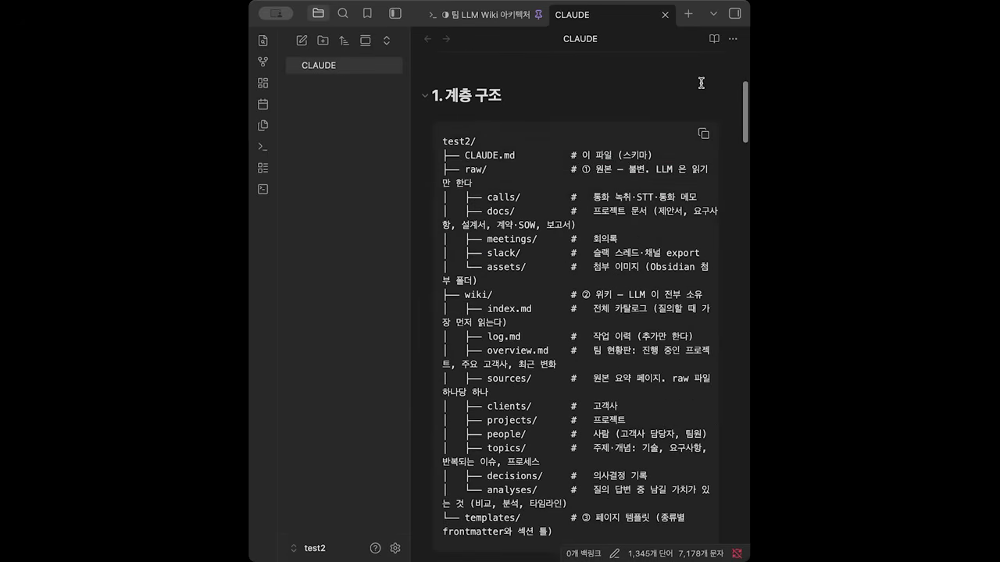
생성된 스키마에는 파일 이름 규칙, 모든 주장에 출처와 시점 달기, 상충되는 내용 표시하기, 민감 정보 처리, 스키마를 고칠 때의 절차까지 들어가 있어요. 강사는 이 초안을 그대로 쓰지 말고, Claude와 대화하며 팀에 맞게 계속 다듬으라고 해요.
원본 7개를 ingest해요
raw에 미리 넣어 둔 원본 7개를 ingest하라고 시키면 돼요. 실제로는 10분 가까이 걸려서 미리 돌려 둔 결과를 보여 줘요. 원본은 7개인데 위키 페이지는 그보다 훨씬 많이 생겼어요. 고객사, 의사 결정, 사람, 프로젝트, 출처(sources) 페이지가 각각 생겼고, 출처 페이지도 원본을 그대로 옮긴 게 아니라 요약·핵심 내용·미결 사항으로 다시 가공돼 있어요.
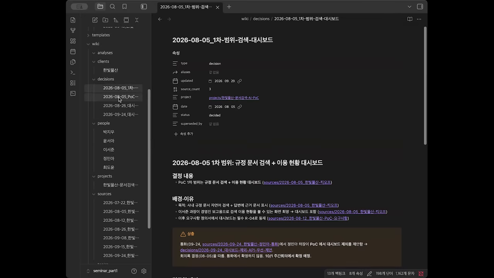
상충을 어떻게 다루나요
프로젝트 페이지에서 눈에 띄는 건 상충 섹션이에요. 8월 회의록에서는 이용 현황 대시보드를 만들기로 했어요. 그런데 9월 24일 통화에서는 대시보드를 빼자는 제안이 나왔어요. 시연 일정도 회의록은 10월 말, 통화는 11월 중순으로 어긋나요.
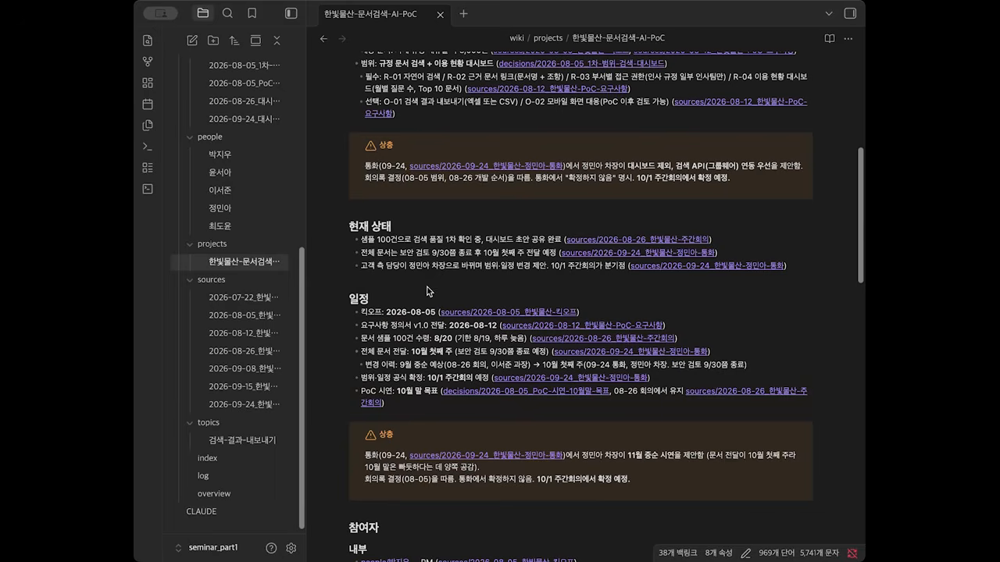
위키가 이렇게 판단한 건 스키마에 출처 신뢰도 규칙을 적어 뒀기 때문이에요. 계약서나 공식 문서를 가장 높은 우선순위로 믿으라고 했거든요. RAG였다면 두 문서가 함께 검색되고, 모델이나 사용자 취향에 따라 최신인 통화를 믿을 수도, 회의록을 믿을 수도 있어요. 위키는 규칙대로 한쪽을 따르면서 충돌 사실을 함께 남겨요.
사람 정보도 쌓여요
슬랙 원본에는 일부러 시나리오를 넣어 뒀어요. 담당 과장에게 보낸 메일이 '수신자 없음'으로 반송되고, 알고 보니 퇴사했다는 내용이에요. 위키는 이서준 과장의 퇴사와 정민아 차장의 인수를 사람 페이지에 기록했어요.
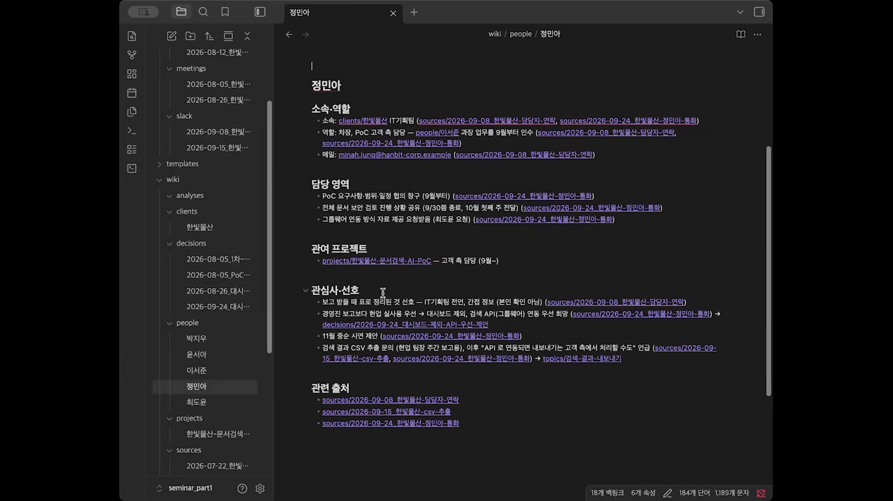
질문하고, 좋은 답은 저장해요
옵시디언의 그래프 뷰로 보면 문서들이 사람·회의 단위로 묶여 있는 게 보여요.
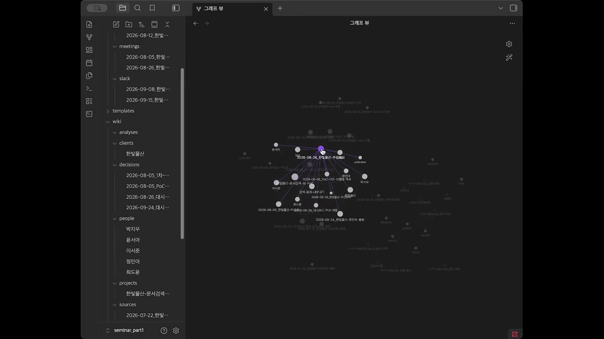
이제 위키에 질문해요. 한빛물산 건을 브리핑해 달라고 하자 Claude Code가 먼저 index.md를 읽고, 어느 페이지를 봐야 할지 골라 들어가요. 답에는 담당자가 바뀌면서 우선순위도 바뀌었다는 점, 대시보드 제외, PoC 일정 연기가 함께 정리돼 나와요. 문서 하나만 봐서는 쓸 수 없는, 여러 문서를 엮어야 나오는 답이에요.
답 끝에 '이 브리핑을 위키에 저장할까요?'라고 물어요. 저장하라고 하면 analyses 폴더에 새 페이지가 생기고 인덱스에도 올라가요. 좋은 답이 다시 위키가 되는 과정이에요.
사람을 기다리는 위키는 왜 늦어질까요
실습에서는 채팅으로 위키를 만들었어요. 문서 7개에 8~9분이 걸렸고, 그동안 사람이 화면을 지켜봤어요. 팀에서 쓰면 사정이 달라져요.
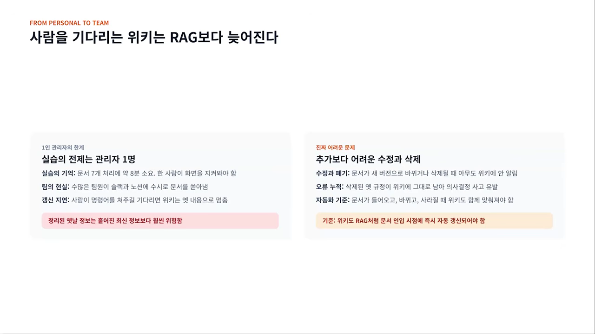
- 팀원이 많으면 문서가 훨씬 많이 들어와요. 그때마다 누군가 'raw에 이 문서가 들어갔으니 ingest 해 줘'라고 채팅해야 해요.
- 그 말을 하지 않으면 위키는 갱신되지 않아요. 넣은 문서와 위키 내용이 점점 어긋나요.
- 슬라이드는 더 어려운 문제로 수정과 삭제를 꼽아요. 문서가 새 버전으로 바뀌거나 삭제돼도 아무도 위키에 알려 주지 않아요.
그래서 강사 팀은 문서를 넣으면 곧바로 위키가 갱신되는 자동화를 생각했어요. 그런데 사람을 빼면 품질 보증도 같이 빠져요. 실습에서도 원래는 생성된 위키를 사람이 눈으로 다시 확인해야 해요. 위키가 퇴사한 사람을 '퇴사하지 않았다'고 잘못 쓸 수도 있으니까요. 자동화로 다 통과시키면 그런 잘못이 그대로 위키에 남아요.
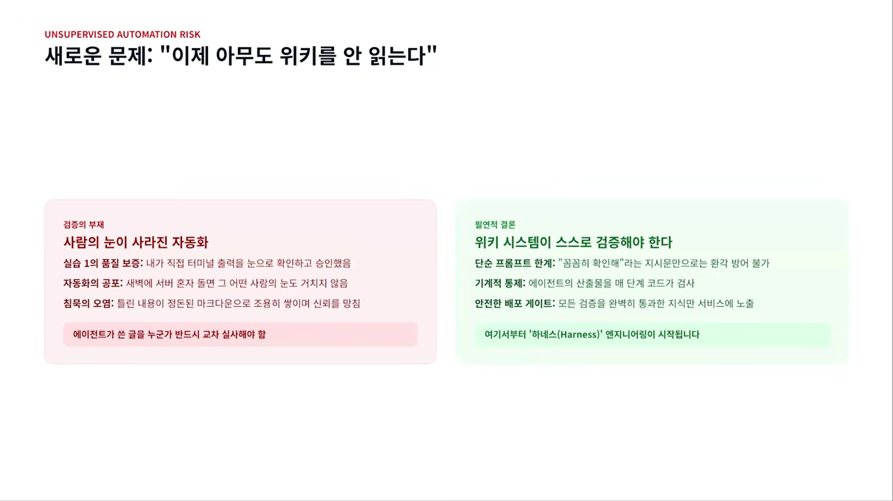
프롬프트에 '꼼꼼히 확인해'라고 쓰면 되지 않을까요? 강사는 부족하다고 해요. 프롬프트는 강제가 아니라 지시라서요. 그래서 에이전트가 낸 결과를 코드로 검사하고, 통과한 것만 사람들에게 내보내는 구조를 만들었어요. 여기서부터 하네스 얘기가 시작돼요.
하네스와 두 가지 규칙
하네스는 AI를 가두는 족쇄가 아니라, 에이전트가 제 힘을 발휘하도록 감싸는 실행 환경이에요. 모델을 뺀 나머지 전부, 즉 컨텍스트, 메모리, 검증 루프를 합친 것을 하네스라고 불러요.
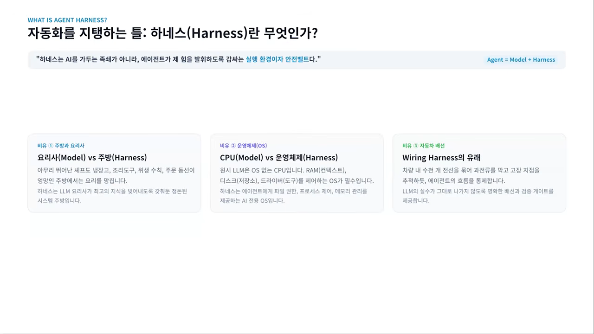
강사의 비유는 요리사와 주방이에요. 아무리 뛰어난 셰프라도 처음 온 주방에서는 실수해요. 그래서 동선을 맞추고 위생 수칙을 적어 두고, 그 안에서 일하게 해요. 요즘은 같은 모델이라도 하네스를 얼마나 잘 갖추느냐에 따라 성능 차이가 크게 나요.
환경을 만들기 전에 강사가 세운 규칙은 두 가지예요.
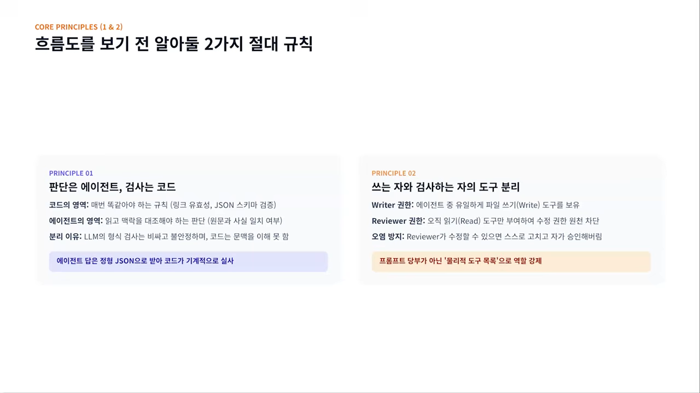
- 판단은 에이전트, 검사는 코드. 링크가 깨졌는지, JSON 형식이 맞는지처럼 매번 같은 답이 나와야 하는 결정론적 검사는 코드가 해요. LLM도 JSON을 잘 내지만 가끔 깨지니까요. 반대로 문장이 원문에 실제로 있는지처럼 읽고 판단해야 하는 일은 코드가 못 하니 에이전트가 해요.
- 쓰는 자와 검사하는 자의 도구 분리. 파일 쓰기 도구는 writer 에이전트에게만 줘요. reviewer에게는 읽기 도구만 줘요. 검사하다 직접 고칠 수 있으면 자기가 고치고 자기가 통과시켜서, 검사의 의미가 없어지거든요.
첫 번째 규칙에는 한 가지가 더 붙어요. 에이전트의 답을 그냥 읽지 않고, 정해진 JSON으로 받아 코드가 한 번 더 검사해요. 통과한 것만 다음 단계로 넘어가요. 두 번째 규칙도 프롬프트에 '고치지 마'라고 쓰는 게 아니라, 도구 자체를 주지 않아서 시스템적으로 막아요.
위키 빌더 파이프라인
두 규칙을 바탕으로 만든 위키 빌더의 전체 흐름이에요. 회색 박스는 코드로 구현한 규칙이고, 주황색 박스는 에이전트가 판단하는 부분이에요.
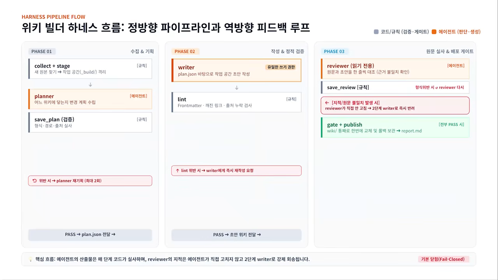
| 단계 | 에이전트가 하는 일 | 코드가 검사하는 것 | 실패하면 |
|---|---|---|---|
| 1. 수집·기획 | planner가 어느 위키를 어떻게 고칠지 계획을 세워 JSON으로 내요 | 새 원본이 있는지 찾고, 계획의 형식·경로·출처를 검사해요. 계획에 적힌 파일이 실제로 있는지도 봐요 | planner가 다시 계획해요 (최대 2회) |
| 2. 작성·정적 검증 | writer가 계획대로 위키 초안을 써요. 파일을 쓸 수 있는 유일한 에이전트예요 | lint가 프론트매터, 깨진 링크, 출처 누락을 검사해요 | writer에게 다시 작성을 요청해요 |
| 3. 원문 대조·배포 | reviewer가 초안과 원문을 한 줄씩 대조해요 | reviewer의 답 형식을 검사하고, 전부 PASS일 때만 게시해요 | reviewer가 직접 고치지 않고 writer에게 반려해요 |
작업 공간 격리와 기본 닫힘 게이트
writer가 편집하는 임시 공간(_build)과 팀원에게 보여 주는 공간(wiki)은 따로 둬요. 같은 곳에 두면 편집 중인 문서를 누군가 읽을 수 있으니까요.
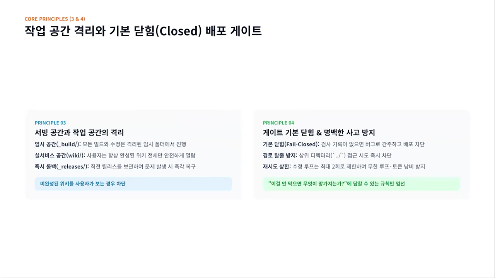
게이트는 Fail-Closed로 동작해요. 검사 기록이 없으면 통과가 아니라 차단이에요. 기록이 빠진 채 통과되는 버그를 막으려고, 검사 기록이 있어야만 게시할 수 있게 했어요.
조용히 멈춘 reviewer
강사가 실제로 겪은 사고도 있어요. 어느 날 빌드를 돌렸는데 페이지가 발행되지 않았어요. 에러도 없고 로그도 멀쩡했어요. 디버깅해 보니 reviewer에서 멈춘 거였어요. 위키 문장의 근거를 원문에서 찾지 못하자 계속 다시 읽다가 상한에 걸려 끝났고, 판정 자체를 내리지 못했어요. 게이트는 검사 기록이 없으니 조용히 막았고요.
그래서 '확인하지 못함'도 FAIL로 내도록 바꿨어요. 근거를 대야 할 책임은 작성자인 writer에게 넘어가요. 판정이 아예 빠진 경우에는 reviewer를 다시 불러 판정하게 했어요. 강사가 여기서 배운 건, writer만이 아니라 검사하는 에이전트도 실패할 수 있다는 점이에요. 파이프라인은 검사자의 실패 경로까지 정해 둬야 멈추지 않아요.
문서 신뢰 라이프사이클
자동으로 만든 문서라는 걸 독자가 알 수 있게, 프론트매터에 page_status 필드를 넣었어요. 사람이 모든 문서를 실시간으로 검수할 수 없다는 현실을 인정하고, 대신 검증 상태를 드러내는 거예요.
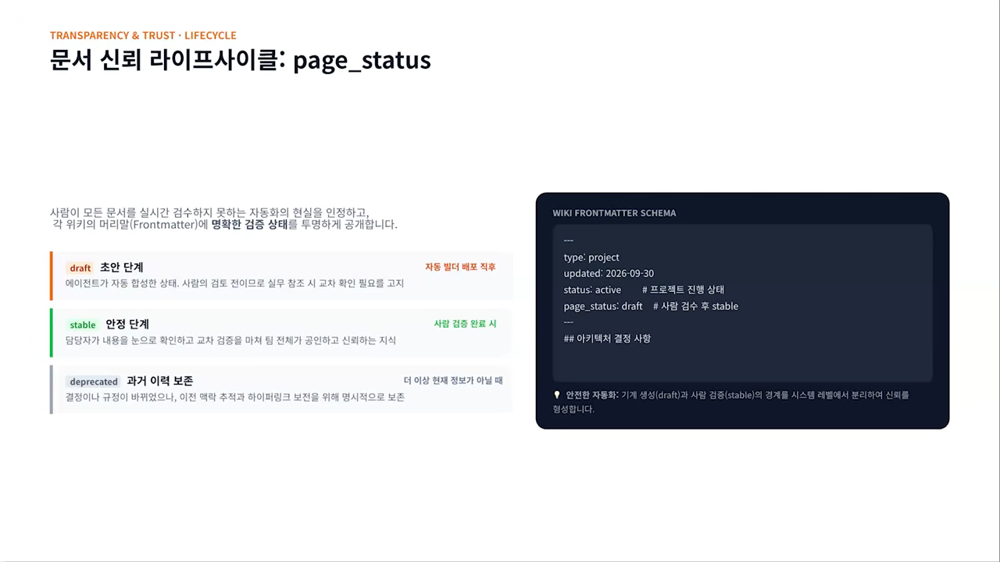
draft: 자동 빌더가 막 만든 상태예요. 사람이 검토하기 전이라, 실무에 쓸 때는 교차 확인이 필요하다는 안내를 함께 붙여요.stable: 담당자가 눈으로 확인하고 '이제 믿어도 돼'라고 올린 상태예요.deprecated: 결정이나 규정이 바뀌어 더 이상 현재 정보가 아니지만, 이전 맥락을 보려고 보존하는 문서예요.
실습 ②: /build로 자동 빌더 돌리기
이번 실습은 실제로 회의를 한 번 더 했다고 가정하고, 9월 30일 회의록을 raw에 새로 넣는 데서 시작해요.
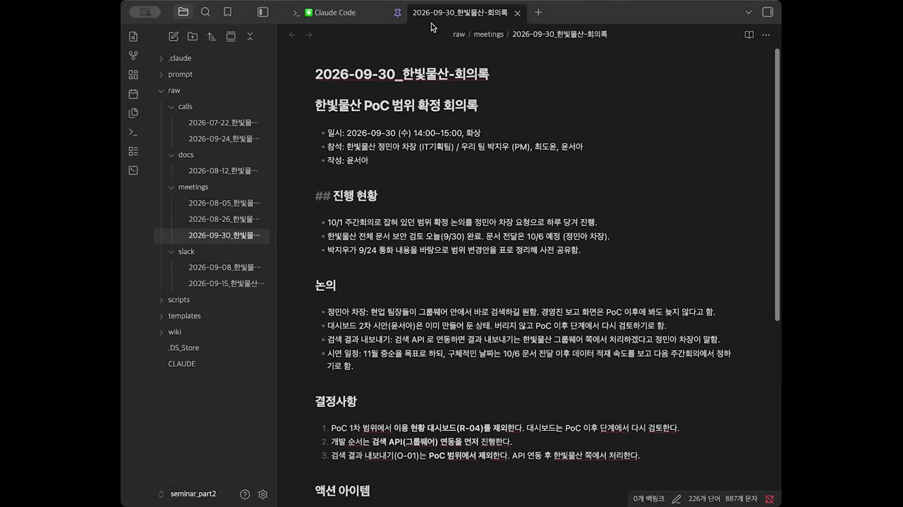
에이전트 셋과 build 스킬
Claude Code에 build라는 스킬을 미리 만들어 두었어요. /build를 입력하면 자동 빌더가 돌아요. .claude/agents 아래에는 앞에서 본 세 역할이 각각 정의돼 있어요.
- wiki-planner: 어떤 원본이 새로 들어왔는지 보고, 어떤 위키 페이지를 만들거나 고칠지 계획을 짜요.
- wiki-writer: 그 계획을 바탕으로 위키 페이지 초안을 써요.
- wiki-reviewer: writer가 만든 초안을 받아 원문과 대조하고, 결과를 정해진 형식으로 내요.
build 스킬의 SKILL.md에는 앞의 흐름이 그대로 절차로 적혀 있어요. 새 문서가 있는지는 파이썬 스크립트가 판단하고, planner의 답은 받은 그대로 검증 스크립트에 넘겨요. writer가 쓴 뒤에는 lint 스크립트가, reviewer가 대조한 뒤에는 또 다른 스크립트가 검사하고, 마지막 발행도 코드가 해요.
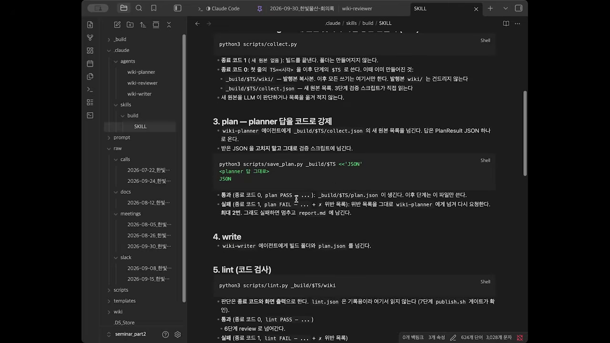
빌드 결과
빌드가 도는 동안 _build 아래에 collect.json(새로 들어온 원본 목록)과 report(단계별 진행 기록)가 생겨요. 리포트 파일은 추적 가시성을 위해 일부러 쓰게 한 거예요. 작업이 끝나면 _build에서 고친 문서가 wiki로 옮겨지고, 이전 wiki는 _releases로 옮겨져요.
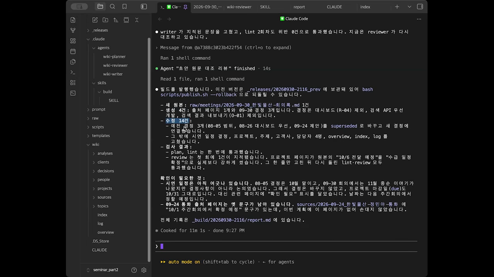
요약을 보면 이래요.
- 새로 생긴 건 출처 페이지 1개와 9월 30일 결정 3개예요. 대시보드 제외, 검색 API 우선 개발, 검색 결과 내보내기 제외예요.
- 예전 결정 3개는 superseded로 바꾸고 새 결정과 연결했어요. 그 밖에 시연 일정, 프로젝트, 고객사, 담당자 페이지와 overview, index, log도 고쳤어요.
- reviewer는 프로젝트 페이지가 원본의 '10/6 전달 예정'을 '수급 일정 확정'으로 실제보다 강하게 쓴 문장을 지적했어요.
- '확인이 필요한 것'도 따로 알려 줘요. 시연 일정은 아직 결정이 아니라 논의 단계라 바꾸지 않고 '확인 필요' 표시만 달았대요.
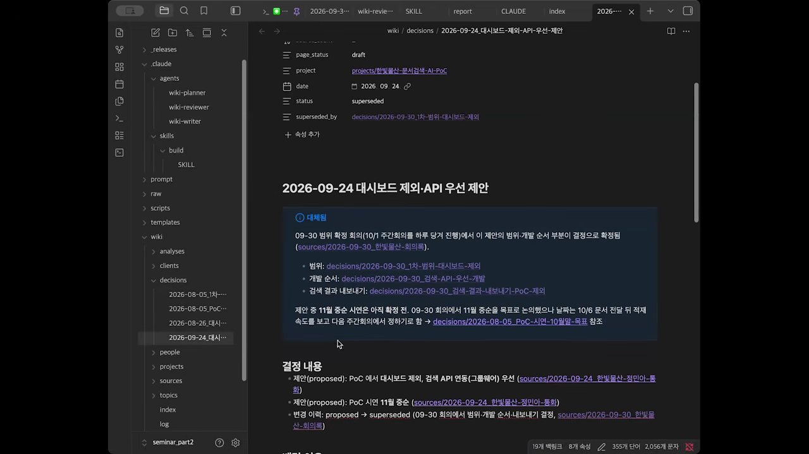
마지막으로 강사는 plan.json도 열어 보여 줘요. planner가 어떤 페이지는 새로 만들고 어떤 페이지는 고치겠다고 계획했고, 그 계획을 기준으로 lint가 깨진 링크나 없는 문서 참조가 없는지 확인해 통과시켰어요. 채팅으로 시키던 일을, 사람이 지켜보지 않아도 검증을 거쳐 발행되는 구조로 바꾼 거예요.